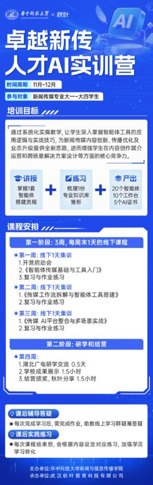
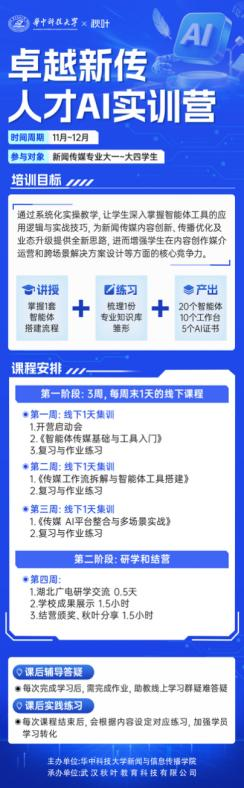
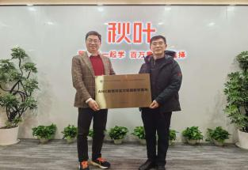
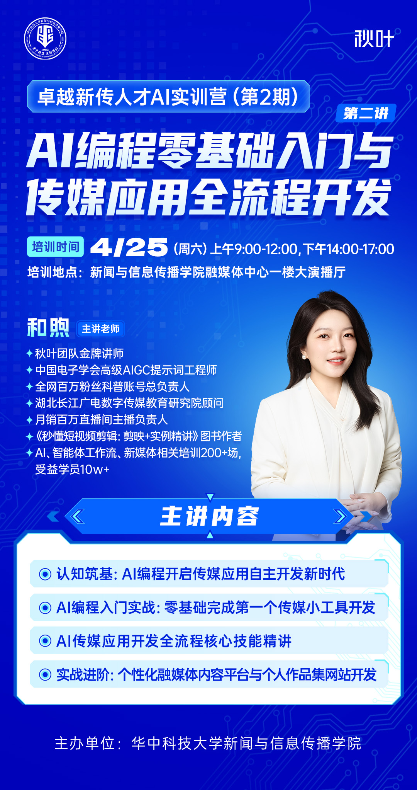
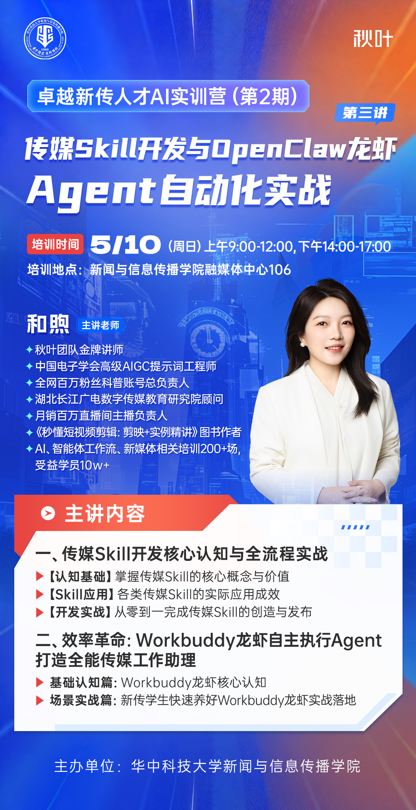
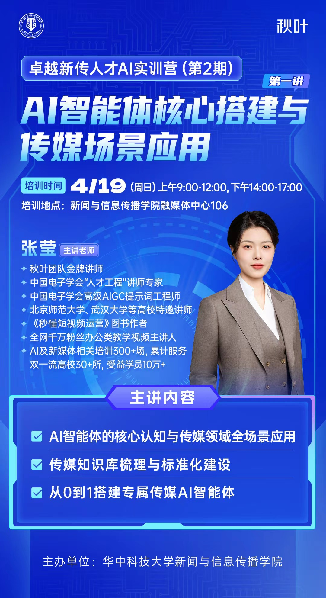
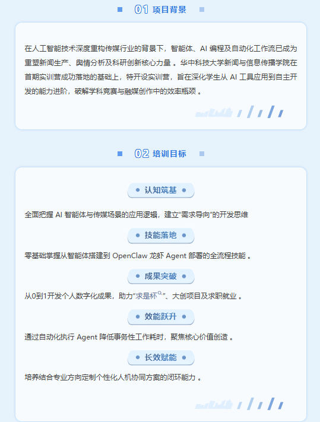
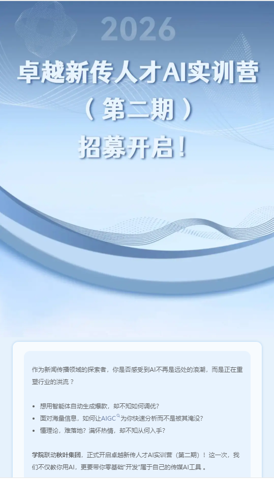
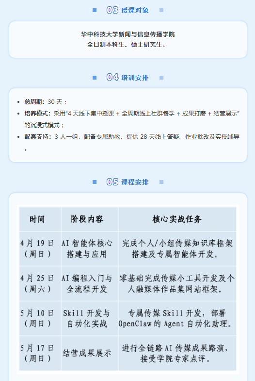

AI产教融合专业共建
华中科技大学新闻学院
人才实训第一期
"课题驱动 + 场景实战" 双轮培养模式，覆盖内容策划、视听制作、平台运营等 10 大核心课题模块，通过 6 轮校内密集实训与 2 天企业沉浸式实战，构建从课堂到职场的无缝衔接通道


2025年11月，秋叶集团联合华中科技大学新闻与信息传播学院举办“卓越新传人才AI实训营”，通过线下实践、线上辅导、企业参访与路演汇报，助力学生掌握智能体应用实战，并发布五大实训营智能体平台

华中科技大学新闻学院
2026年4月，秋叶集团联合华中科技大学新闻与信息传播学院举办“卓越新传人才AI实训营”第3期，采用4天线下授课+全周期线上督学+成果打磨+结营展示模式，配备专属助教，提供28天线上辅导与实操支持
华中科技大学新闻学院






人才实训第二期
人才实训第三期